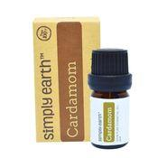
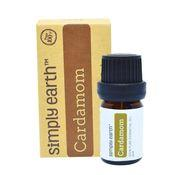

Love of EO
Essential Oils
Using essential oils can be quite overwhelming. There are so many options with brands, what oils to use for me? Then there are carrier oils, different recipes, different ways to use the oils etc. Now you have reps from direct sales companies trying to convice you that their oils are the only ones worth buying (which is why I searched for another company with the same quality and much lower prices).
When I first started using essential oils, it seemed like there was so many things I needed. I bought a few oils and a diffuser, but soon I wanted to do more with my oils. I wanted to create balms and salves, shampoos, and baby products, but I had no idea where to start. So I would pick up a few things here and there and hope to create something interesting and of course, be disappointed when it didn't turn out. (Some of them while others didn't)
Simply Earth is here to fix this problem. They send out a subscription box every month (or quarterly) which includes 4 full sized oils, recipe cards, and most of the items needed to make each recipe. The shipping is free and you can cancel or resubscribe at any time! The cost is $39 monthly. I absolutely love this company!
March's Box
In case you haven't heard your Monthly box is getting better with a BIG BONUS BOX! The Big Bonus Box is going to come withy our regular subscription box once every 6 months. Each bonus box will have a carrier oil, a hard oil (like shea butter), beeswax, and containers to get you through the next 6 recipe boes. Fear not, you're still going to get your regular box each month with four oils, recipe cards, and fun extras. YOU DO NOT WANT TO MIX MARCH'S BOX!


 

Extras:
Almond Oil
Beeswax
Solid Coconut Oil
Terracotta Beads
Recipe Cards
Love - the ingredients in love are Orange, Ylang Ylang, Bergamot, & Vetiver Essential Oil.
Lavender - this is a very calming, soothing essential oil and a MUST HAVE in any collection.
Blood Orange - Blood Orange trees are of medium-size with greenish-brown bark, spines on the branches; grow well under the sun. The fruit is a lot smaller than the ordinary orange from the grocery, but there are blots of red on the skin.
Cardamom - Used in traditional Chinese and Indian medicine for over 3000 years for fever, digestive, and pulmonary disease and as a spice all over the world.
Don't know what they smell like? Find out their aromas
Monthly boxes include 4 full sized oils!
Recipe Cards
Extra Items each month
Free shipping
Cancel at any time
Use the code ALEXMCGILLIVRAYFREE for a $20 Gift Card and a BIG BONUS BOX at a $50 value.!!!
Learn More Here